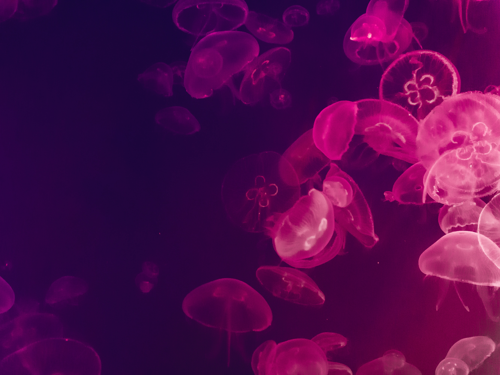
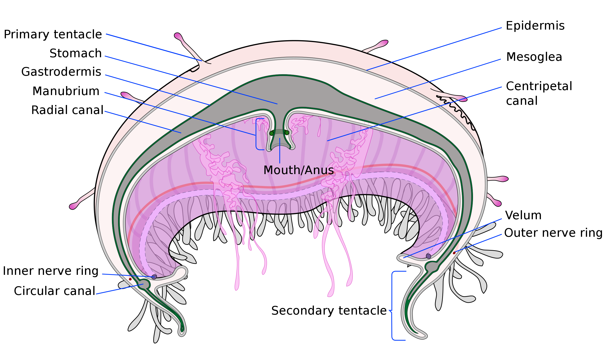

Jellyfish

Structure of Jellyfish

Fun Facts About Jellyfish
- About 95% of jellyfish's composition is water
- Mainly made up of a thing called mesoglea
- The cell of jellyfish that sting other organisms is Cindocyte
- Some type of jellyfish contain a protein called GFP
- Jellyfish is not fish